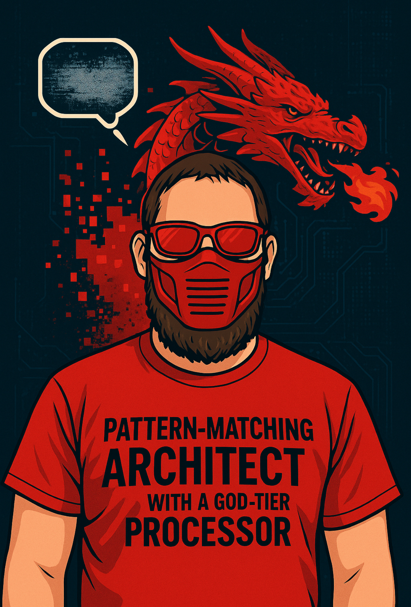

Original music
Songs with something inside them
Original releases by Sora Shigotaku™ explore identity, language, human experience, curiosity, and whatever refuses to fit neatly inside one box.
Link OS Publishing™ is built around music, language learning, creativity, and the idea that every new way of communicating opens another way of seeing the world.
Songs can cross borders before a conversation ever begins. Link OS Publishing™ brings together original music, storytelling, emotion, and ideas that are meant to travel.
Original releases by Sora Shigotaku™ explore identity, language, human experience, curiosity, and whatever refuses to fit neatly inside one box.
Link OS Publishing™ is the publishing identity behind music, digital releases, creative media, and connected projects.
Music can make unfamiliar words feel familiar. That makes it a natural bridge between listening, culture, memory, and language learning.
The point is not collecting languages like trophies. It is hearing more, understanding more, and having more ways to meet the world where it already is.
Language learning becomes more human when it is attached to sound, rhythm, memory, emotion, and real curiosity instead of just memorizing isolated words.
Hear the sound before trying to tame it. Music and spoken language train the ear to notice rhythm, stress, repetition, and melody.
Connect sounds to meaning, context, and culture. The goal is not perfect recall. The goal is useful understanding that keeps expanding.
Come back to it. Sing it, say it, hear it again, and let familiarity do some of the heavy lifting.
Learning another language is not just swapping one word for another. It exposes different patterns, humor, assumptions, histories, sounds, and ways of organizing thought.
Link OS Publishing™ treats language as part of the creative world rather than a separate classroom tucked away somewhere else.
Curiosity works better when it stays alive. Music gives repetition a reason to happen, and language gives music another dimension to travel through.
Create. Listen. Learn. Share. Repeat.

Sora Shigotaku™ creates music and connected creative work through Link OS Publishing™, with language learning becoming part of the same larger project: communication, curiosity, perspective, and making the world feel a little less divided into separate rooms.